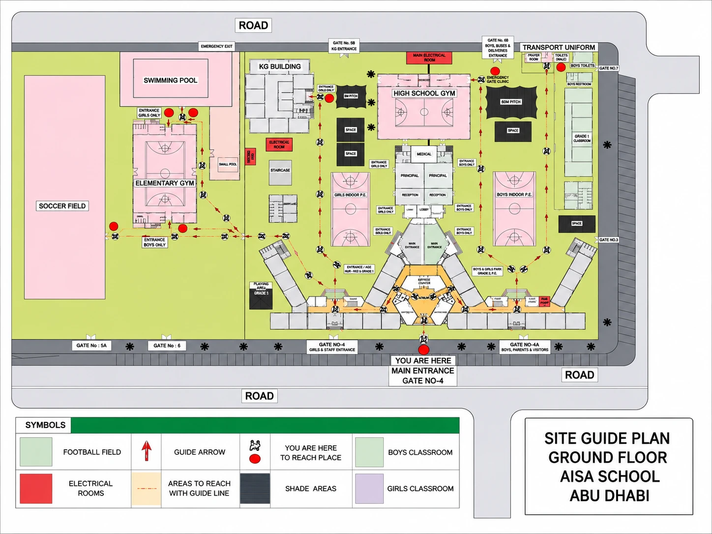
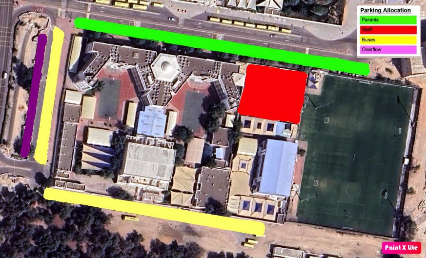

Know the campus, your safety responsibilities, and what to do in an emergency — AISA is a High-Risk Entity, so safety is shared by everyone.
Before anything else, get oriented. The AISA campus has nine gates and a cluster of buildings and facilities. Knowing where things are — and which gate is which — makes everything from arrival to an emergency drill go smoothly.
We'll cover which gates are used for what — and their speed limits — in Section 5.

Abu Dhabi classifies schools as either High-Risk or Medium-Risk entities. The classification is based on:
AISA is classified as High-Risk. Being a High-Risk Entity means health and safety is a shared responsibility between all staff, students, contractors, and even visitors.
During audits, the audit team may approach you to check that you're aware of your school's High-Risk status. Now you are.
Every employee is responsible for working safely, following procedures, and reporting hazards. HR communicates Occupational Safety & Health (OSH) roles, responsibilities and accountabilities through three channels:
All staff must wear their AISA ID badge visibly at all times while on campus.
All visitors, parents and external contractors must enter through designated security checkpoints (such as Gate 4), register, present a valid Emirates ID, and wear a colour-coded visitor lanyard while on site.
The campus is monitored 24/7 by CCTV cameras and on-site guard patrols, in compliance with Abu Dhabi safety regulations.
An auditor stops you in a corridor and asks about your school's safety status. What is the correct, accurate response?
Arrival and dismissal are the busiest, highest-risk moments of the day. Parking is colour-coded into four zones, and each gate has a defined use, time window and speed limit.

| Area | Gate / Location | Time window | Users | Speed limit |
|---|---|---|---|---|
| 🏗️ Main entrance | Gate 4 | All day | Faculty | Walking only |
| 🚌 Bus loop | Gate 1, Gate 2 | 7:20–8:00 AM · 2:50–3:10 PM | School buses only | 10 km/h |
| 🚗 Parent drop-off | Gate 4, Gate 3 / 3A, Gate 5 | 7:25–8:00 AM · 2:50–3:10 PM | Parents + Cycle 3 students | 15 km/h |
| 🚙 Staff parking | Gate 5A | All day | Faculty / staff only | 20 km/h |
| 🚶 Pedestrian path | Campus perimeter | All day | All students | Walking only |
Corridors, stairwells and fire-exit doors must remain completely unobstructed at all times.
Report trailing cables, loose mats or damaged flooring immediately. Wet areas during cleaning must be marked with yellow warning signs.
Never stand on student desks, chairs or spinning office chairs to hang decorations. Use an approved step ladder or log a request with maintenance.
Use electrical equipment safely and report damaged items. Where applicable, handle, store and dispose of hazardous substances safely.
Submit all maintenance, repair, furniture setup, moving and facilities requests through the Workflow Work Order Request Form so they're tracked, assigned and completed on time. Avoid verbal-only requests unless it's an emergency.
Campus facilities are monitored by automated fire alarms connected directly to Abu Dhabi Civil Defence via the Hassantuk framework. Only use a fire extinguisher if all four are true:
For an external campus threat, a lockdown directive is broadcast over the PA. Immediately:
A continuous fire-alarm siren sounds mid-lesson. What is the correct sequence?
The campus has a fully equipped clinic staffed by licensed Department of Health (DoH) medical professionals.
Download the full School Layout & Overview document (DOCX), and make sure you've located the evacuation map and assembly point nearest your classroom.